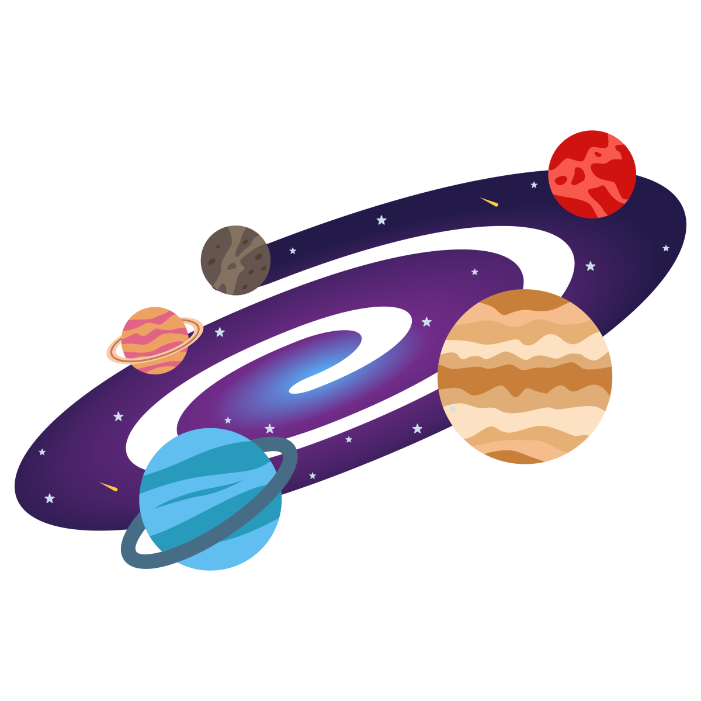
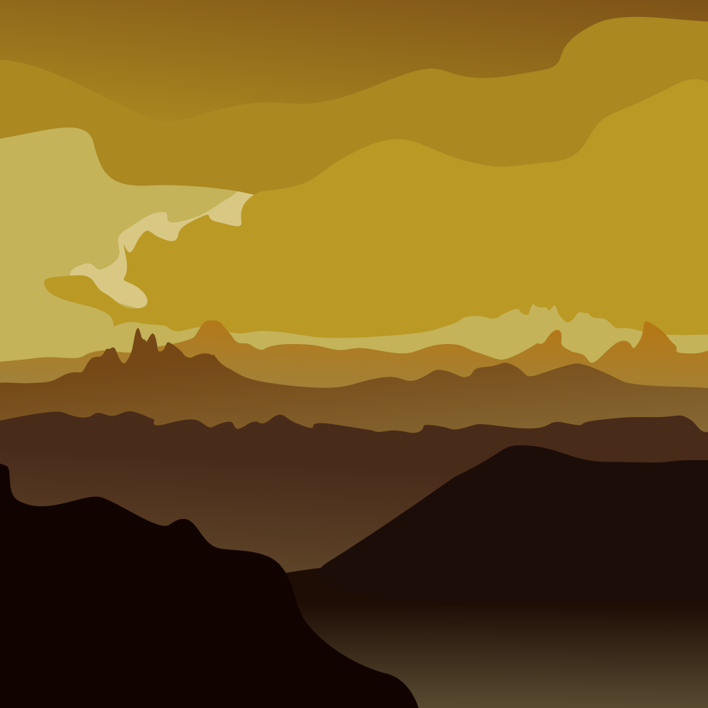
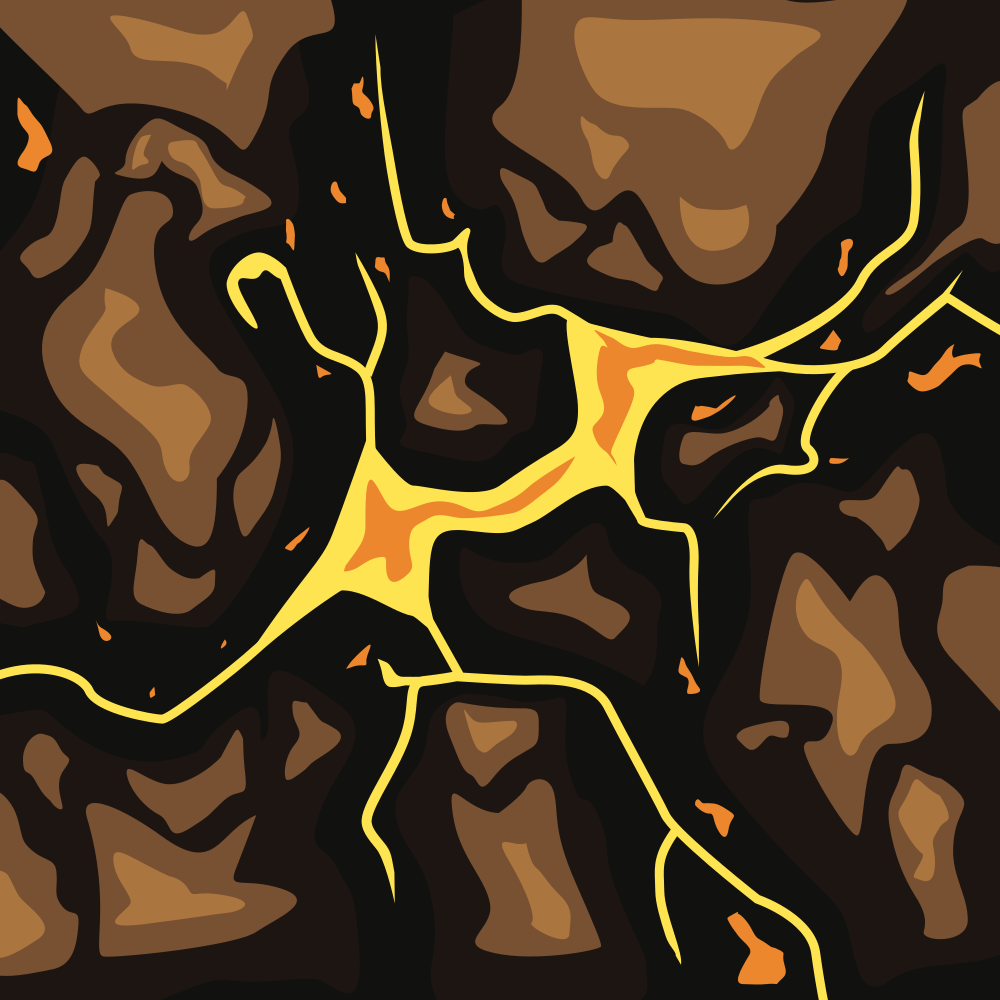
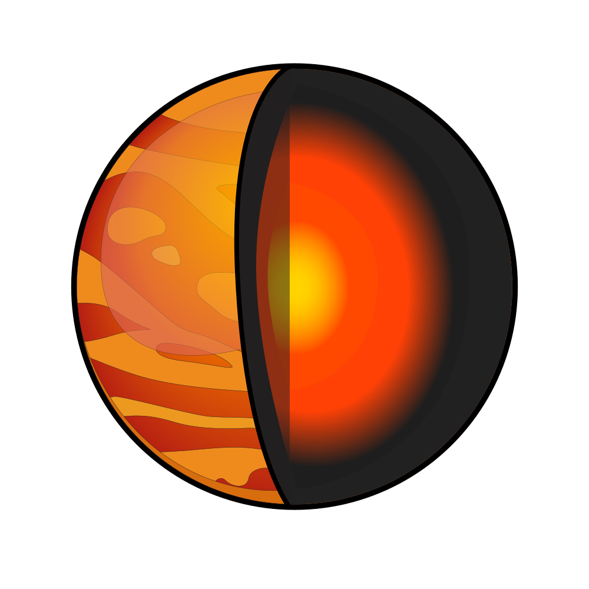
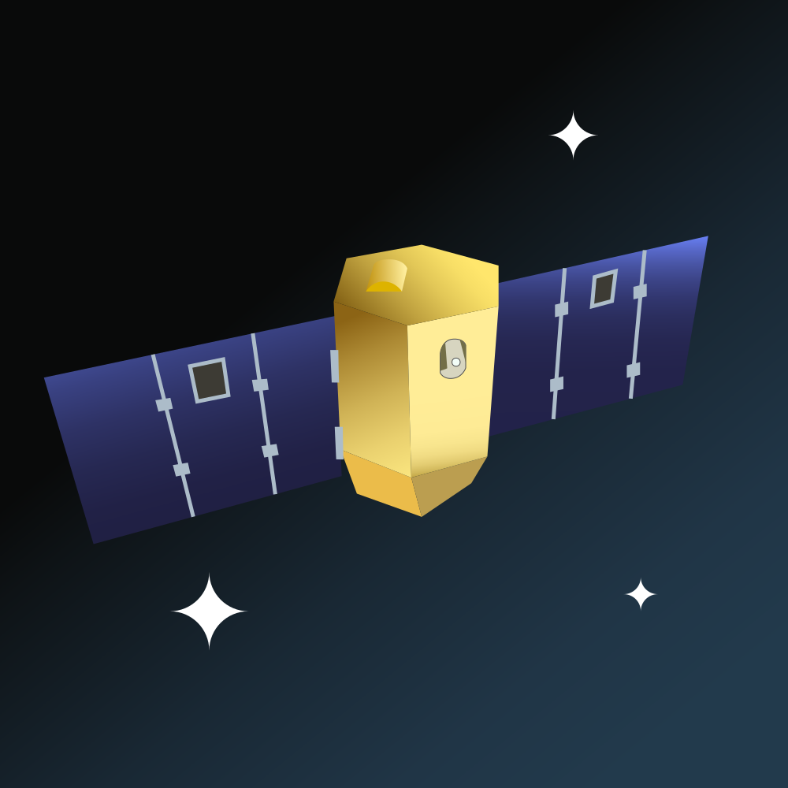
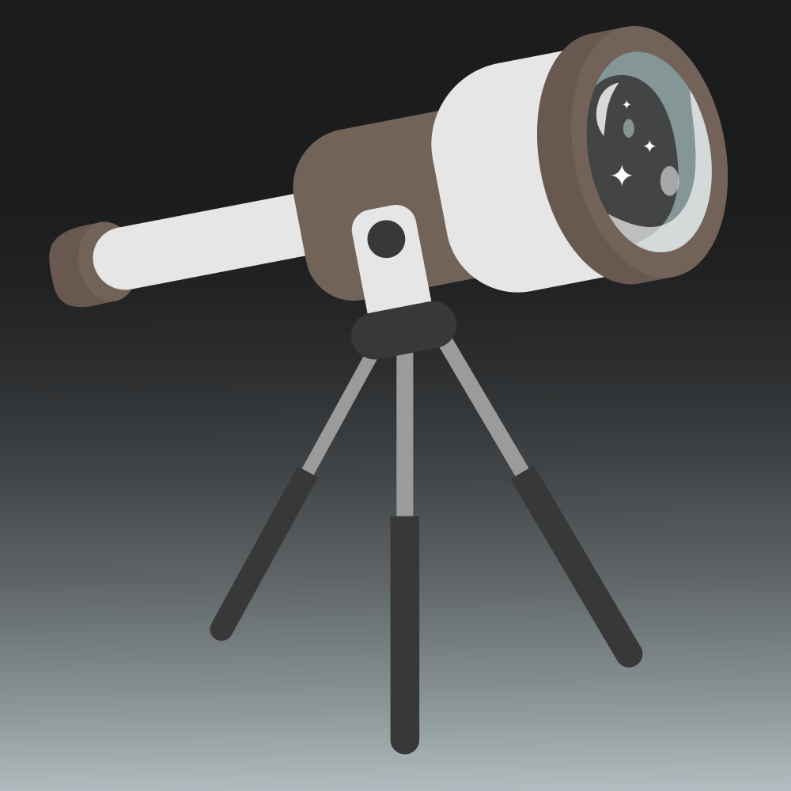
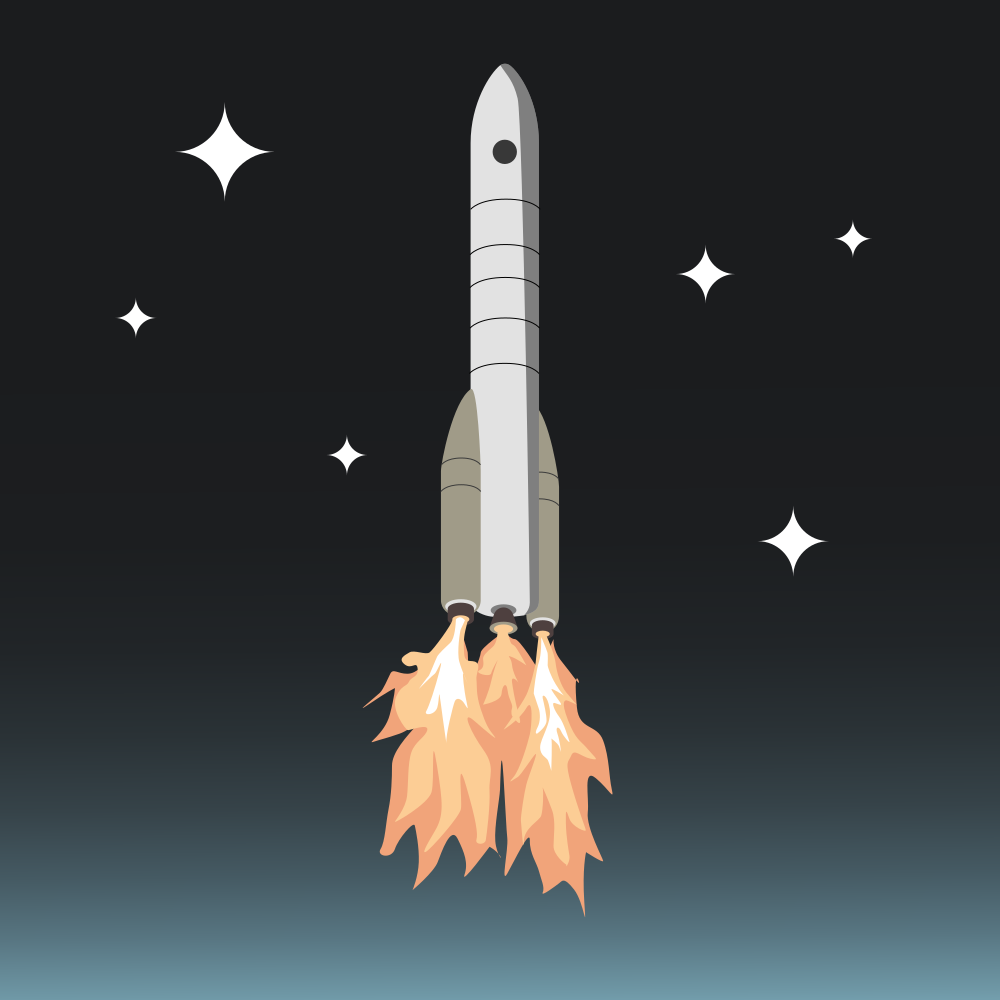

ГАЛЕРЕЯ ВЕНЕРИ
Колекція унікальних ілюстрацій, що розкривають красу та таємниці другої планети від Сонця
ВЕНЕРА
Планета-сестра, що стала пеклом

СОНЯЧНА СИСТЕМА
Ранкова і вечірня зоря

ОРБІТА
Ретроградний рух і довга доба

ПОВЕРХНЯ
Загадка вулканічних рівнин

ЛАВОВІ ПОТОКИ
Геологічна катастрофа

БУДОВА
Ядро і мантія планети

ВЕНЕРА-13
Піонери пекла

ОРБІТАЛЬНІ МІСІЇ
Радарне око "Магеллана"

СПОСТЕРЕЖЕННЯ
Наземні дослідження

ЗАПУСКИ
Ракети-носії місій
НЕБЕСНІ ОБ'ЄКТИ
Комети поблизу Венери
×